|
Edith Tretschk I am a Research Scientist at Meta Reality Labs Research in the San Francisco Bay Area. I did my PhD in the Visual Computing and Artificial Intelligence department at the Max Planck Institute for Informatics with Christian Theobalt as my Ph.D. advisor. Email / CV / Google Scholar / LinkedIn / Twitter |
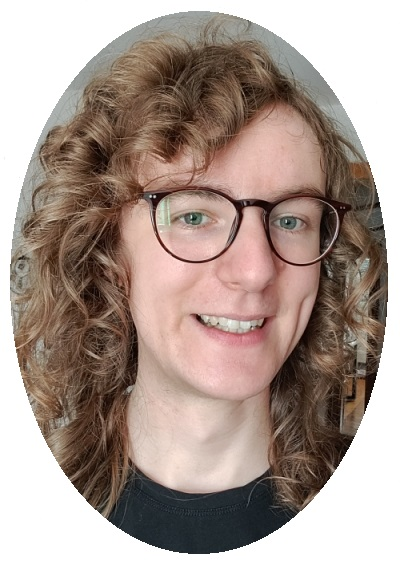 |
ResearchMy research lies at the intersection of computer graphics, computer vision, and machine learning. My work so far has covered 3D reconstruction; general, non-rigidly deforming objects; and neural rendering and neural scene representations. |
| 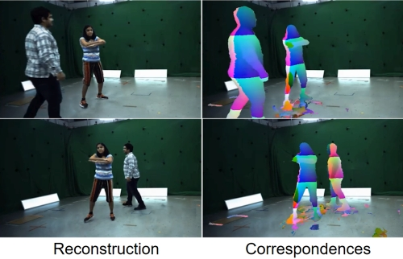 |
SceNeRFlow: Time-Consistent Reconstruction of General Dynamic Scenes
Edith Tretschk, Vladislav Golyanik, Michael Zollhöfer, Aljaž Božič, Christoph Lassner, Christian Theobalt 3DV, 2024 project page (incl. code) / arXiv Existing methods for the 4D reconstruction of general, non-rigidly deforming objects focus on novel-view synthesis and neglect correspondences. We propose SceNeRFlow to reconstruct a general, non-rigid scene in a time-consistent manner. Our dynamic-NeRF method takes multi-view RGB videos and background images from static cameras with known camera parameters as input. Like prior dynamic-NeRF methods, we use a backwards deformation model. We find non-trivial adaptations of this model necessary to handle larger motions. We show experimentally that, unlike prior work that only handles small motion, our method enables the reconstruction of studio-scale motions. |
| 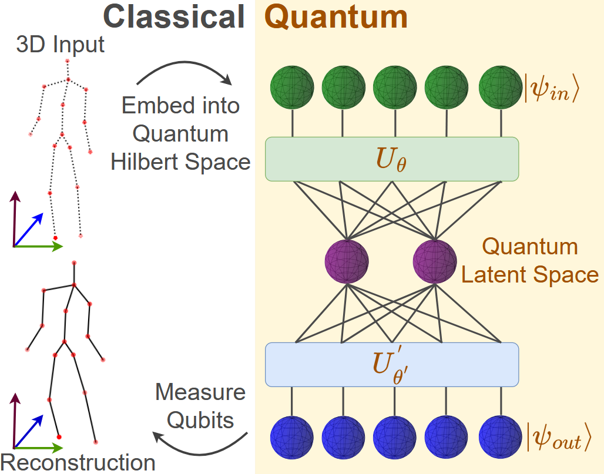 |
3D-QAE: Fully Quantum Auto-Encoding of 3D Point Clouds
Lakshika Rathi, Edith Tretschk, Rishabh Dabral, Christian Theobalt, Vladislav Golyanik BMVC, 2023 project page (incl. code) / arXiv This paper introduces the first quantum auto-encoder for 3D point clouds. Our 3D-QAE approach is fully quantum, i.e. all its data processing components are designed for quantum hardware. Along with finding a suitable architecture, the core challenges in designing such a fully quantum model include 3D data normalisation and parameter optimisation, and we propose solutions for both these tasks. Experiments on simulated gate-based quantum hardware demonstrate that our method outperforms simple classical baselines, paving the way for a new research direction in 3D computer vision. |
| 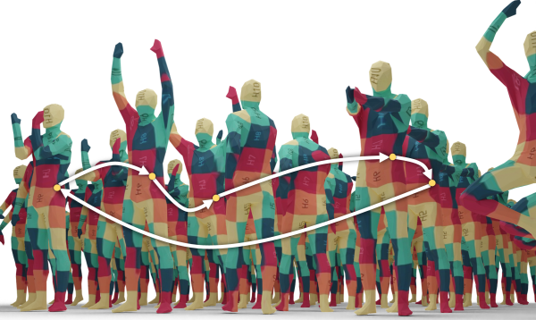 |
CCuantuMM: Cycle-Consistent Quantum-Hybrid Matching of Multiple Shapes
Harshil Bhatia, Edith Tretschk, Zorah Lähner, Marcel Seelbach Benkner, Michael Moeller, Christian Theobalt, Vladislav Golyanik CVPR, 2023 project page (incl. code) / arXiv Jointly matching multiple, non-rigidly deformed 3D shapes is a challenging, NP-hard problem. A perfect matching is necessarily cycle-consistent: Following the pairwise point correspondences along several shapes must end up at the starting vertex of the original shape. This paper introduces the first quantum-hybrid approach for 3D shape multi-matching. Its iterative formulation is admissible to modern adiabatic quantum hardware and scales linearly with the total number of input shapes. On benchmark datasets, the proposed approach is on-par with classical multi-matching methods. |
| 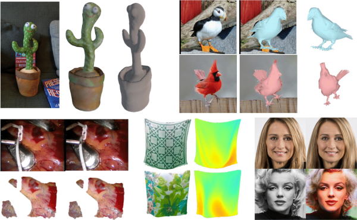 |
State of the Art in Dense Monocular Non-Rigid 3D Reconstruction
Edith Tretschk*, Navami Kairanda*, Mallikarjun B R, Rishabh Dabral, Adam Kortylewski, Bernhard Egger, Marc Habermann, Pascal Fua, Christian Theobalt, Vladislav Golyanik Eurographics (STAR), 2023 project page / arXiv This survey focuses on state-of-the-art methods for dense non-rigid 3D reconstruction of various deformable objects and composite scenes from monocular videos or sets of monocular views. It reviews the fundamentals of 3D reconstruction from 2D image observations. We then start from general methods, and proceed towards techniques making stronger assumptions about the observed objects (e.g. human faces, bodies, hands, and animals). We conclude by discussing open challenges in the field and the social aspects associated with the usage of the reviewed methods. |
| 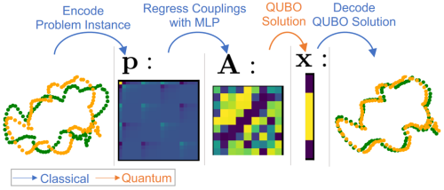 |
QuAnt: Quantum Annealing with Learnt Couplings
Marcel Seelbach Benkner, Maximilian Krahn, Edith Tretschk, Zorah Lähner, Michael Moeller, Vladislav Golyanik ICLR, 2023 (Top 25%) project page (incl. code & data) / arXiv / OpenReview Modern quantum annealers can find high-quality solutions to combinatorial optimisation objectives given as quadratic unconstrained binary optimisation (QUBO) problems. Unfortunately, obtaining suitable QUBO forms in computer vision remains challenging and currently requires problem-specific analytical derivations. In stark contrast to prior work, this paper proposes to learn QUBO forms from data through gradient backpropagation instead of deriving them. As a result, the solution encodings can be chosen flexibly and compactly. Furthermore, our methodology is general and virtually independent of the specifics of the target problem type. |
| 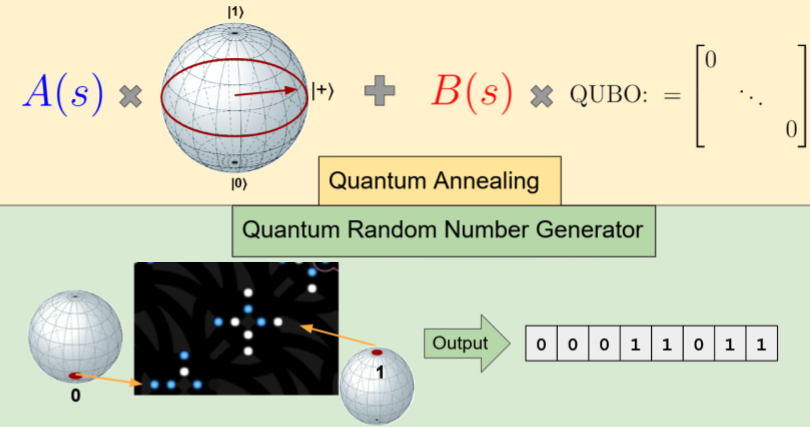 |
Generation of Truly Random Numbers on a Quantum Annealer
Harshil Bhatia, Edith Tretschk, Christian Theobalt, Vladislav Golyanik IEEE Access, 2022 project page (incl. code & data) This study investigates how qubits of modern quantum annealers (QA) such as D-Wave can be applied for generating truly random numbers. We show how a QA can be initialised and how the annealing schedule can be set so that after the annealing, thousands of truly random binary numbers are measured in parallel. We discuss the observed qubits' properties and their influence on the random number generation and consider various physical factors that influence the performance of our generator, i.e., digital-to-analogue quantisation errors, flux errors, temperature errors and spin bath polarisation. |
| 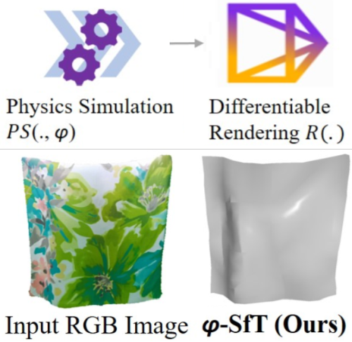 |
φ-SfT: Shape-from-Template with a Physics-based Deformation Model
Navami Kairanda, Edith Tretschk, Mohamed Elgharib, Christian Theobalt, Vladislav Golyanik CVPR, 2022 project page (incl. code & data) / arXiv This paper proposes a new SfT approach explaining the observations through simulation of a physically-based surface deformation model representing forces and material properties. In contrast to previous works, we utilise a differentiable physics-based simulator to regularise the surface evolution. In addition, we regress the material properties such as its bending coefficients, elasticity, stiffness, and material density. For the evaluation, we record with an RGB-D camera challenging real surfaces with various material properties and texture, exposed to physical forces. Our approach reconstructs the underlying deformations much more accurately than related methods. |
| 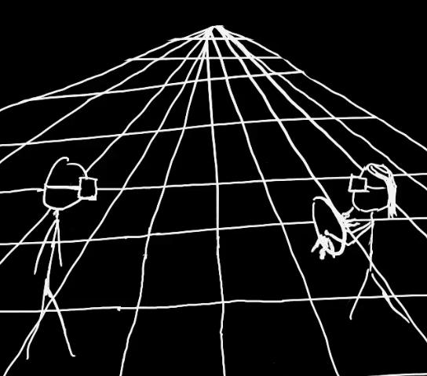 |
Virtual Elastic Objects
Hsiao-yu Chen, Edith Tretschk, Tuur Stuyck, Petr Kadleček, Ladislav Kavan, Etienne Vouga, Christoph Lassner CVPR, 2022 project page (incl. data) / arXiv We present Virtual Elastic Objects (VEOs): virtual objects that not only look like their real-world counterparts but also behave like them, even when subject to novel interactions. Achieving this presents multiple challenges: not only do objects have to be captured including the physical forces acting on them, then faithfully reconstructed and rendered, but also plausible material parameters found and simulated. The resulting method can handle objects composed of inhomogeneous material, with very different shapes, and it can simulate interactions with other virtual objects. We present our results using a newly collected dataset of 12 objects under a variety of force fields, which will be shared with the community. |
| 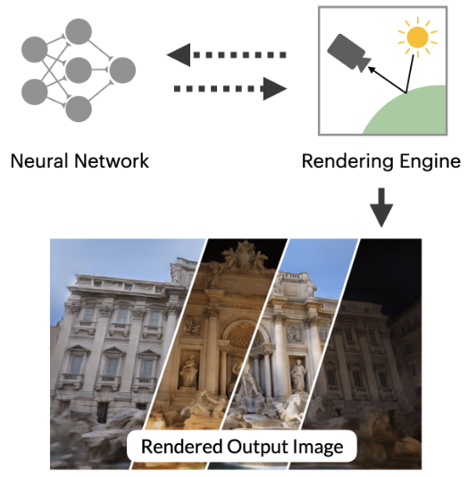 |
Advances in Neural Rendering
Ayush Tewari*, Justus Thies*, Ben Mildenhall*, Pratul Srinivasan*, Edith Tretschk, Yifan Wang, Christoph Lassner, Vincent Sitzmann, Ricardo Martin-Brualla, Stephen Lombardi, Tomas Simon, Christian Theobalt, Matthias Niessner, Jonathan T. Barron, Gordon Wetzstein, Michael Zollhöfer, Vladislav Golyanik Eurographics (STAR), 2022 project page / arXiv This state-of-the-art report on advances in neural rendering focuses on methods that combine classical rendering principles with learned 3D scene representations, often now referred to as neural scene representations. In addition to methods that handle static scenes, we cover neural scene representations for modeling non-rigidly deforming objects and scene editing and composition. While most of these approaches are scene-specific, we also discuss techniques that generalize across object classes and can be used for generative tasks. In addition to reviewing these state-of-the-art methods, we provide an overview of fundamental concepts and definitions used in the current literature. We conclude with a discussion on open challenges and social implications. |
| 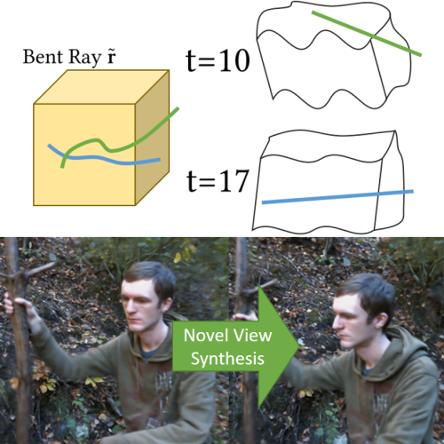 |
Non-Rigid Neural Radiance Fields: Reconstruction and Novel View Synthesis of a Dynamic Scene From Monocular Video
Edith Tretschk, Ayush Tewari, Vladislav Golyanik, Michael Zollhöfer, Christoph Lassner, Christian Theobalt ICCV, 2021 project page (incl. code) / arXiv We present Non-Rigid Neural Radiance Fields (NR-NeRF), a reconstruction and novel view synthesis approach for general non-rigid dynamic scenes. Our approach takes RGB images of a dynamic scene as input (e.g., from a monocular video recording), and creates a high-quality space-time geometry and appearance representation. We show that a single handheld consumer-grade camera is sufficient to synthesize sophisticated renderings of a dynamic scene from novel virtual camera views, e.g. a `bullet-time' video effect. Our formulation enables dense correspondence estimation across views and time, and compelling video editing applications such as motion exaggeration. |
| 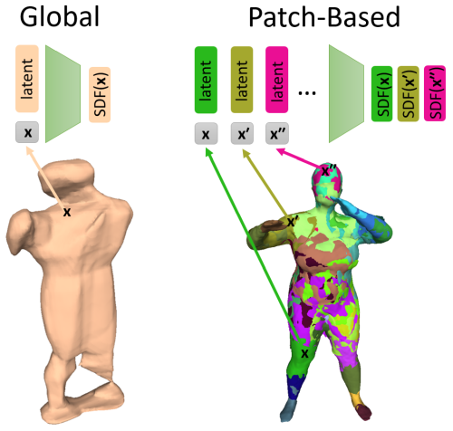 |
PatchNets: Patch-Based Generalizable Deep Implicit 3D Shape Representations
Edith Tretschk, Ayush Tewari, Vladislav Golyanik, Michael Zollhöfer, Carsten Stoll, Christian Theobalt ECCV, 2020 project page (incl. code) / arXiv We present a new mid-level patch-based surface representation. At the level of patches, objects across different categories share similarities, which leads to more generalizable models. We show that our representation trained on one category of objects from ShapeNet can also well represent detailed shapes from any other category. In addition, it can be trained using much fewer shapes, compared to existing approaches. We show several applications of our new representation, including shape interpolation and partial point cloud completion. Due to explicit control over positions, orientations and scales of patches, our representation is also more controllable compared to object-level representations, which enables us to deform encoded shapes non-rigidly. |
| 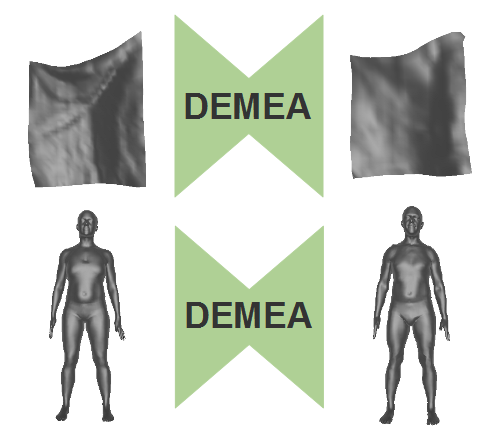 |
DEMEA: Deep Mesh Autoencoders for Non-Rigidly Deforming Objects
Edith Tretschk, Ayush Tewari, Michael Zollhöfer, Vladislav Golyanik, Christian Theobalt ECCV, 2020 (Spotlight) project page / arXiv We propose a general-purpose DEep MEsh Autoencoder (DEMEA) which adds a novel embedded deformation layer to a graph-convolutional mesh autoencoder. We demonstrate multiple applications of DEMEA, including non-rigid 3D reconstruction from depth and shading cues, non-rigid surface tracking, as well as the transfer of deformations over different meshes. |
| 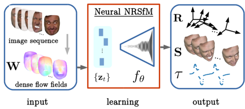 |
Neural Dense Non-Rigid Structure from Motion with Latent Space Constraints
Vikramjit Singh Sidhu, Edith Tretschk, Vladislav Golyanik, Antonio Agudo, Christian Theobalt ECCV, 2020 project page (incl. code) We introduce the first dense neural non-rigid structure from motion (N-NRSfM) approach which can be trained end-to-end in an unsupervised manner from 2D point tracks. We formulate the deformation model by an auto-decoder and impose subspace constraints on the recovered latent space function in the frequency domain, allowing us to recover the period of the input sequence. Our method enables multiple applications including shape compression, completion and interpolation, among others. Combined with an encoder trained directly on 2D images, we perform scenario-specific monocular 3D shape reconstruction at interactive frame rates. |
| 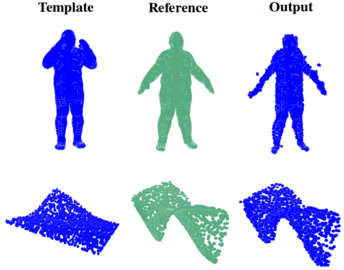 |
DispVoxNets: Non-Rigid Point Set Alignment with Supervised Learning Proxies
Soshi Shimada, Vladislav Golyanik, Edith Tretschk, Didier Stricker, Christian Theobalt 3DV, 2019 (Oral) project page / arXiv We introduce a supervised-learning framework for non-rigid point set alignment of a new kind - Displacements on Voxels Networks (DispVoxNets) - which abstracts away from the point set representation and regresses 3D displacement fields on regularly sampled proxy 3D voxel grids. Thanks to recently released collections of deformable objects with known intra-state correspondences, DispVoxNets learn a deformation model and further priors (e.g., weak point topology preservation) for different object categories such as cloths, human bodies and faces. |
| 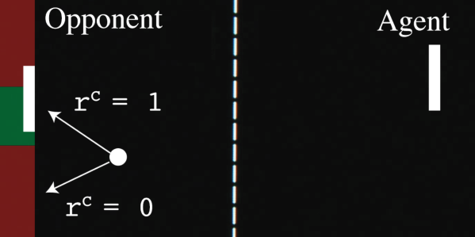 |
Sequential Attacks on Agents for Long-Term Adversarial Goals
Edith Tretschk, Seong Joon Oh, Mario Fritz 2. ACM Computer Science in Cars Symposium, 2018 PDF / arXiv We show that an adversary can be trained to control a deep reinforcement learning agent. Our technique works on fully trained victim agents and makes them pursue an alternative, adversarial goal when under attack. In contrast to traditional attacks on e.g. image classifiers, our setting involves adversarial goals that may not be immediately reachable but instead may require multiple steps to be achieved. |
Education |
|
Ph.D. in Computer Science (October 2018 - July 2023)
Ph.D. Advisor: Prof. Dr. Christian Theobalt Max-Planck-Institut für Informatik and Saarland University, Saarbrücken, Germany Thesis: Representing and Reconstructing General Non-Rigid Objects with Neural Models |
|
 |
Graduate Student in Computer Science (April 2017 - July 2023)
Graduate School of Computer Science at Saarland University, Saarbrücken, Germany |
|
Doctoral Preparatory Phase in Computer Science (April 2017 - October 2018)
Saarland University, Saarbrücken, Germany |
|
B.Sc. in Computer Science (October 2014 - March 2017)
Saarland University, Saarbrücken, Germany Bachelor's Thesis: Variational Pansharpening with Nonlinear Anistropic Diffusion (advisor: Prof. Dr. Joachim Weickert) |
Positions |
| 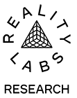 |
Research Scientist (since December 2023)
Meta Reality Labs Research, San Francisco Bay Area |
|
Research Intern (June 2021 - December 2021)
Facebook Reality Labs Research, San Francisco Bay Area Intern Manager: Christoph Lassner |
|
|
Research Immersion Lab (October 2017 - March 2018)
Scalable Learning & Perception at Max-Planck-Institut für Informatik Group Leader: Dr. Mario Fritz |
|
|
Research Immersion Lab (April 2017 - October 2017)
Graphics, Vision & Video at Max-Planck-Institut für Informatik Group Leader: Prof. Dr. Christian Theobalt |
|
|
Student Assistant (October 2016 - March 2017)
Graphics, Vision & Video at Max-Planck-Institut für Informatik Group Leader: Prof. Dr. Christian Theobalt |
Invited Talks |
|
SceNeRFlow: Time-Consistent Reconstruction of General Dynamic Scenes
World Labs, San Francisco Bay Area June 2024 Representing and Reconstructing Dynamic Objects with Neural Models Meta Reality Labs Research, San Francisco Bay Area July 2023 Representing and Reconstructing Dynamic Objects with Neural Models Nvidia, San Francisco Bay Area June 2023 Representing and Reconstructing Dynamic Objects with Neural Models Epic Games, San Francisco Bay Area April 2023 Beyond Faces, Hands, and Bodies: Modelling General Non-Rigid Objects with Kostas Daniilidis at University of Pennsylvania September 2020 |
Miscellaneous |
|
Reviewer for: CVPR, ECCV, ICCV, ICLR, ICML, NeurIPS (Top Reviewer 2022), Siggraph Asia, Siggraph, TPAMI, ICRA
November 2017: Bachelor Award (for the best Bachelor graduates in CS) April 2015 - March 2017: Member of the Bachelor Honors Program (special support program for talented and ambitious Bachelor students in CS) April 2015 - March 2017: Deutschlandstipendium scholarship |
|
This website is built on Jon Barron's website template! |